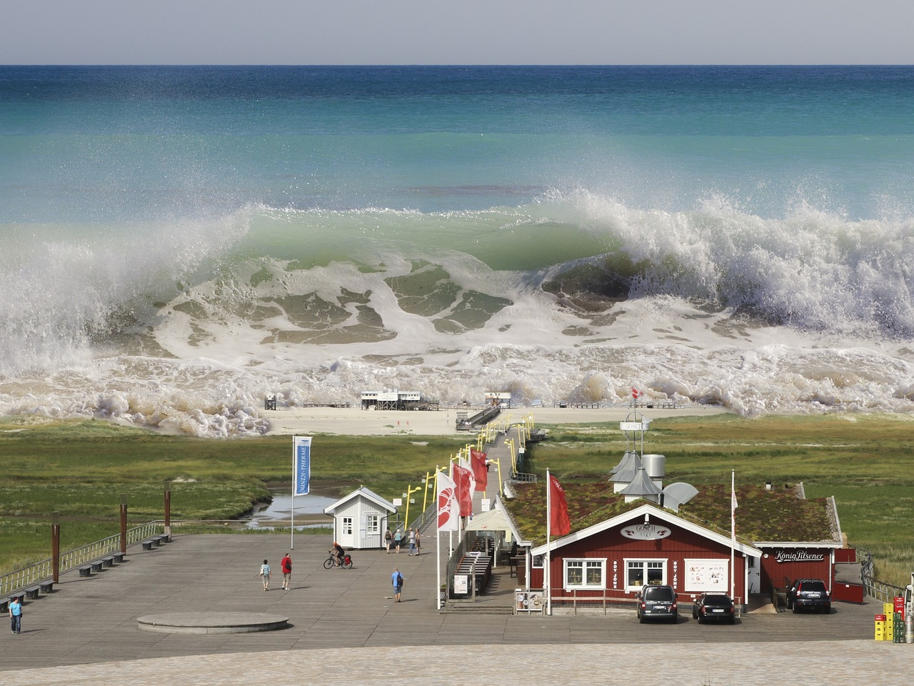

Weather effects different areas in the world. Seasons are different in every continent, in Britain when it's winter in Australia it is summer. Weather is controlled by mother nature and go from peaceful to distasterious in the blink of an eye.
Global warming is effecting the weather in many ways. Climate change is causing sea levels to rise and ice to melt. Flooding and drought occur more often in areas that it didn't use to effect. Extreme weather and natural disasters have worsen over the years such as hurricanes, storms, tsunamis etc. If nothing is done in the next few decades, scientists predict that sea levels will rise high enough to submerge cities in the ocean. By 2050, the sea will rise by 35 centermetres in coasts in England, and 200,000 houses and businesses will be submerged.
The effects of global warming are severe. Temperatures are increasing, oceans are warming, ice is melting, animals are dying and plants are dying. Many animals are affected by this, such as polar bears, penguins, turtles and birds.

Generating power - By powering electricity through fossil fuels such as oil, coal and natural gas can increase global emissions. Most of the electricity used in the world in produced through fossil fuels, only arounf a quarter comes from wind, solar, water and other renewable sources.
Manufacturing goods - Manufacturing goods for industries produces emissions, which a great majority are from burning fossil fuels to produce energy for making things like cement, iron, steel, electronics, plastics, clothes and other goods. Mining and other industrial actions also releases gases.
Cutting down forests - Trees are cut down to make room for farms or other things, which causes emissions, as trees that are cut down release the carbon they had been storing. Forests absorb carbon dioxide, so destroying them limits nature to keeping emissions out the atmosphere.


Using transportation - Most kinds of transportation uses fossil fuels to run including: cars, lorries, ships and planes. This makes transportation one of the main causes of greenhouse gases, especially carbon-dioxide emissions. Vehicles on land make the most emissions, but they also continue to rise in ships and planes.
Producing food - This requires a lot of energy to run farm equipment or fishing boats using fossil fuels. Using fertilisers and manure to grow crops alos release emissions. Farms animals, mainly cows produce methane which is a powerful greenhouse gas. More emissions come from packaging and distributing food.
Powering buildings - Residential and commericial buildings around the world consume half of the world's electricity. Energy to produce electricty is done through coal, oil and natural gas for heating and cooling, they emit incredibly large quantities of greenhouse gas emissions.
Consuming too much - People's daily life from what they eat, use of power at home, how they move around and how much they throw away are a huge contributor to greenhouse gas emissions. So does the consumption of goods such as clothing, electronics and plastics.
Hotter temperatures - 2011-2020 was the hottest decade on record. Since the 1980s, each decade the temperatures rise higher every year. Today, most land areas are having more frequent hot days and heat waves.This causes heat-related illnesses and wildfires.
More severe storms - They have become more intense and frequent in many countries. Temperatures rising, cause more moisture to evaporate which leads to more extreme rainfall and flooding causing more storms. Tropical storms have also been affected by warming ocean, as cyclones, hurricanes and typhoond feed on warm waters at the ocean's surface. This destroys homes and communities, which causes death.
Increased drought - They can lead to the increased risk of agricultural drought that affects crops and ecological droughts which increases the vulnerability to ecosystems. They also cause destructive sand and dust storms that moves billions of tons of sand across continents.
A warming, rising ocean - Soaks up heat into the ocean, as the ocean gets warmer, water rises and ice melts, threatening coastal communites and islands. The ocean also absorbs carbon dioxide which meakes the ocean acidic, endangering marine life.
Loss of species - The world is losing species at a rate 1,000 times greater than at any other time in recorded human history. One million species are at risk of becoming extinct within the next few decades. Forest fires, extreme weather, and invasive pests and diseases are among many threats related to climate change. Some species will be able to relocate and survive, but others will not.
Not enough food - Weather events are one of the many reasons there's a global rise in hunger and poor nutrition as this has caused fisheries, crops and livestock to be destroyed. Changes in snow and ice cover in many Arctic regions have disrupted food supplies from herding, hunting, and fishing. Heat stress can diminish water and grasslands for grazing, causing declining crop yields and affecting livestock.
More health risks - Through air pollution, disease, extreme weather events, forced displacement, pressures on mental health, and increased hunger and poor nutrition in places where people cannot grow or find sufficient food. Every year, environmental factors take the lives of around 13 million people. Changing weather patterns are expanding diseases, and extreme weather events increase deaths and make it difficult for health care systems to keep up.
Poverty and dosplacement - Floods may sweep away urban slums, destroying homes and livelihoods. Heat can make it difficult to work in outdoor jobs. Water scarcity may affect crops. Over the past decade (2010–2019), weather-related events displaced an estimated 23.1 million people on average each year, leaving many more vulnerable to poverty.
There are many things we can do to help slow the effects of climate change. Here are some ways you can help: